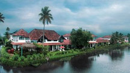
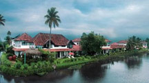

Recent Post

Top Destinations for Durga Puja
Celebration and Pandal Hopping
in India.

Durga Puja: The Festival Which
Brings Together Almost all of India to Pay Reverence to Goddess Dur


429
Shares
HERITAGE
15 Must Visit Historical Places & Monuments in Karnataka
Recent Post
Top Destinations for Durga Puja
Celebration and Pandal Hopping
in India.
Durga Puja: The Festival Which
Brings Together Almost all of India to Pay Reverence to Goddess Dur
Karnataka has the second highest number of nationally protected monuments in India, in addition to 752
monuments protected by the State Directorate of Archaeology and Museums and another 25,000
monuments are yet to receive protection. This clearly tells that Karnataka is the right place for all
history to satiate your wanderlust in India. However, we understand how difficult it can be to pick
few destinations from 25000+ monuments worth seeing in the state. Therefore, we thought of lending
a hand of help while using the other to create a list of famous historical places in Karnataka. This list
would you discover ancient places, monuments in the heart of urban cities and some important reminiscence
of rich past of thestate by being your heritage travel guide. So without further ado, here are our top 15 must
visit historical places and monuments in Karnataka.
 

Belgaum Fort

The Belgaum Fort is the main landmark of historic city of Belgaum and hold important place as heritage site in
Karnataka that reflects the history of the city. At the entrance of the fort, there are two shrines, Ganapati and
Durga. There are two Jinalayas done in the later Chalukya style dating around 1204 AD. Out of the two temple,
one lies in ruin. It isbelieved that there were once 108 Jain Temples and 101 Shiva Temples in the premises of the fort.